Regression comparison
Download resultsDataset
Training setting
Repulsion weight
Repulsion location
Compare repulsion locations
Method
Random points redraw every step and exclude all training inputs. Training and random use B points; combined uses 2B. Prediction axes match within each DE or BDKN row.
Functional repulsion
BetterWorse · relative rank within each column
DE
| Repulsion inputs | RMSE | NLL | Training seconds |
|---|---|---|---|
| Training | 0.11162 | -0.58207 | 24.85 |
| Random | 0.11203 | -0.59803 | 24.21 |
| Training + random | 0.11166 | -0.60163 | 25.03 |
BDKN
| Repulsion inputs | RMSE | NLL | Training seconds |
|---|---|---|---|
| Training | 0.11162 | -0.75626 | 25.00 |
| Random | 0.11240 | -0.74750 | 24.35 |
| Training + random | 0.11144 | -0.75712 | 25.17 |
Stage 1 · total loss and data fit
X: log · Y: signed log
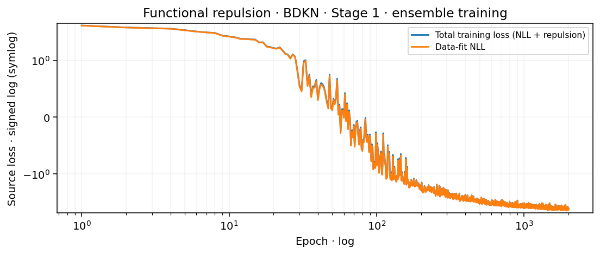
X: log · Y: signed log
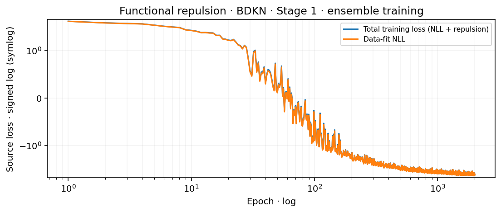
X: log · Y: signed log
Repulsion loss R only
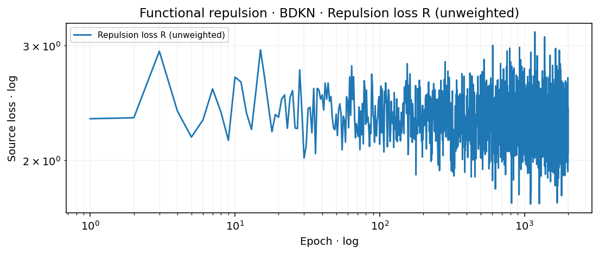
X: log · Y: log
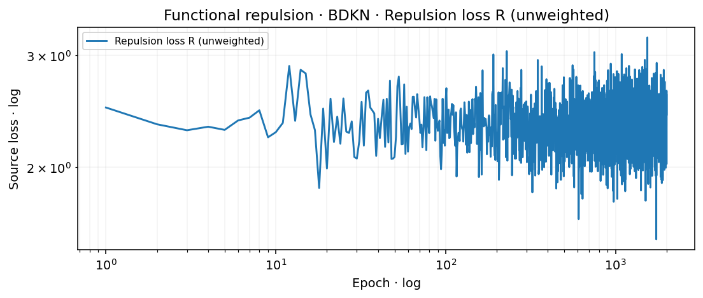
X: log · Y: log
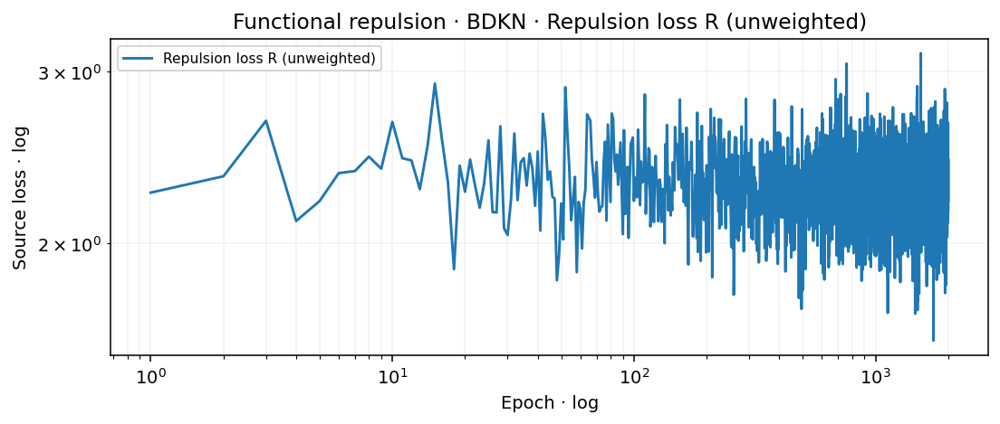
X: log · Y: log
Stage 2 · Bayesian marginal NLL
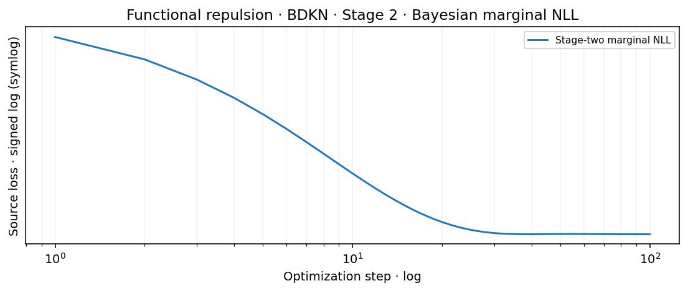
X: log · Y: signed log
X: log · Y: signed log
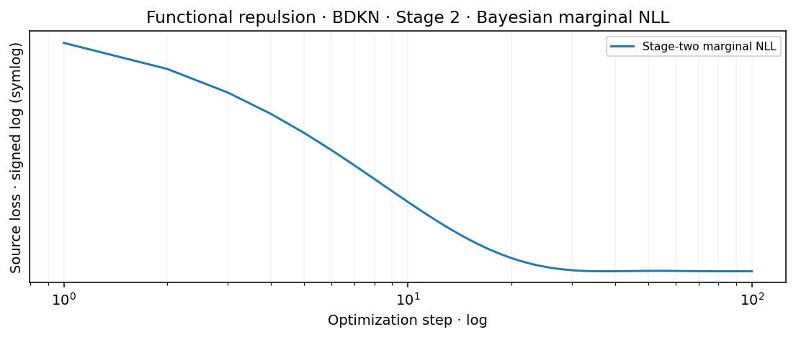
X: log · Y: signed log
First-order repulsion
BetterWorse · relative rank within each column
DE
| Repulsion inputs | RMSE | NLL | Training seconds |
|---|---|---|---|
| Training | 0.11258 | -0.58081 | 52.23 |
| Random | 0.11236 | -0.60564 | 51.53 |
| Training + random | 0.11190 | -0.59631 | 51.26 |
BDKN
| Repulsion inputs | RMSE | NLL | Training seconds |
|---|---|---|---|
| Training | 0.11215 | -0.75128 | 52.37 |
| Random | 0.11262 | -0.74770 | 51.67 |
| Training + random | 0.11205 | -0.75279 | 51.40 |
Stage 1 · total loss and data fit
Repulsion loss R only
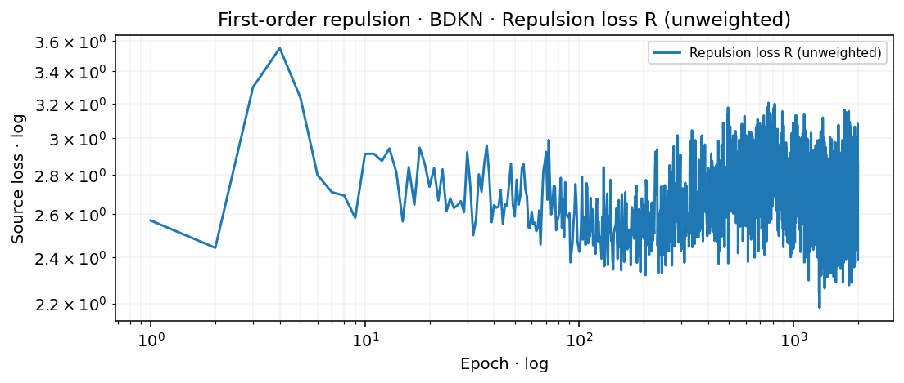
X: log · Y: log
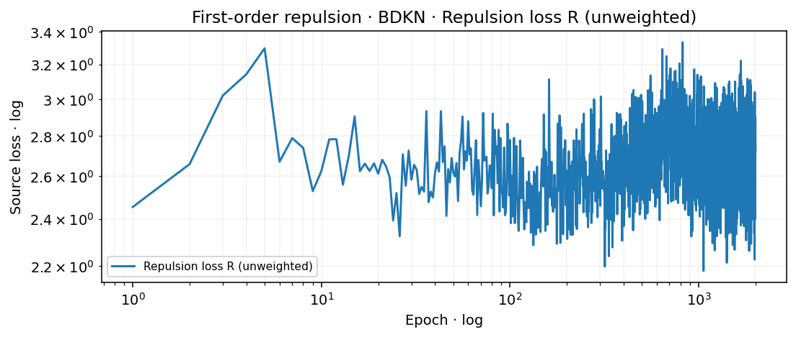
X: log · Y: log
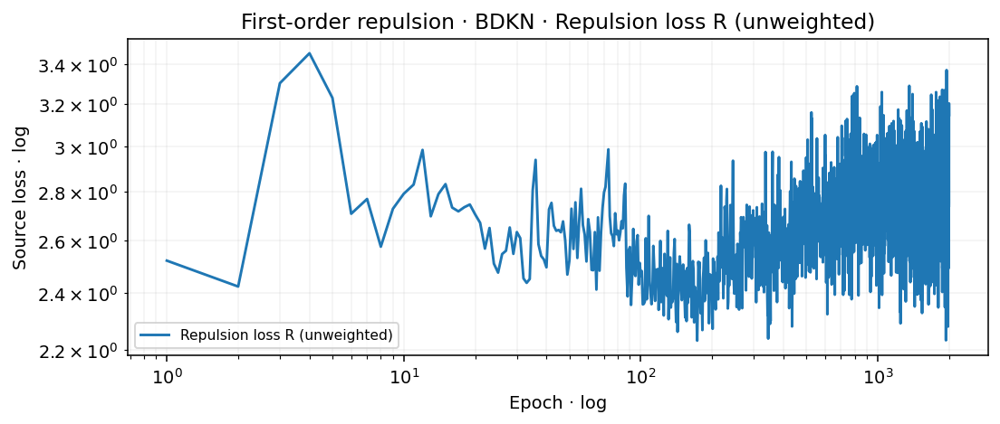
X: log · Y: log
Stage 2 · Bayesian marginal NLL
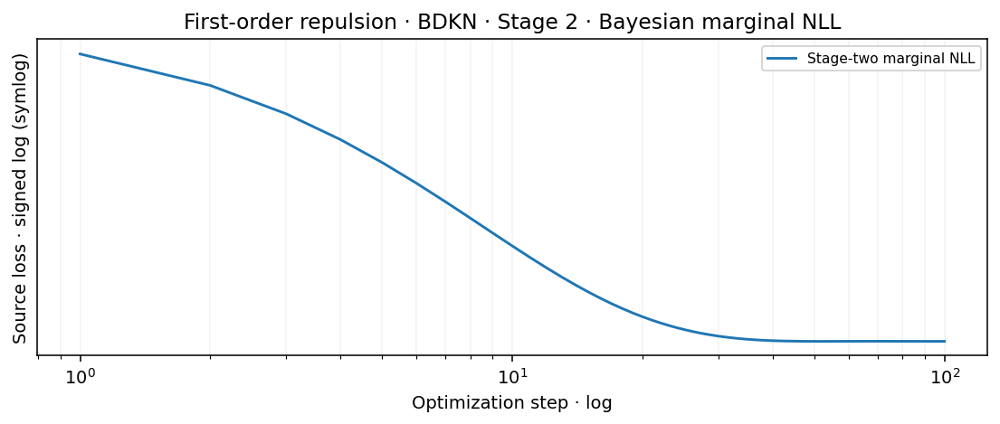
X: log · Y: signed log
X: log · Y: signed log
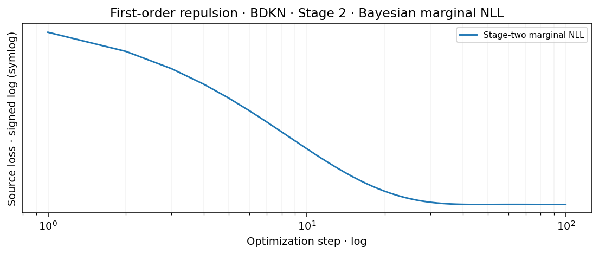
X: log · Y: signed log
Weight repulsion · location-independent
The loss compares network parameters directly. These same results apply to every location.
| Stage | RMSE | NLL | Training seconds |
|---|---|---|---|
| DE | 0.11282 | -0.54160 | 19.18 |
| BDKN | 0.11263 | -0.74236 | 19.31 |